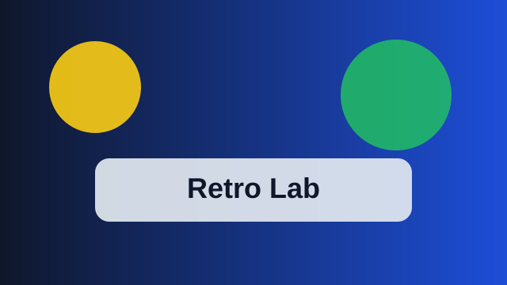

Descubre los elementos clave
Este proyecto presenta una selección de elementos clásicos que combinan nostalgia, diseño visual y utilidad práctica para explorar contenidos de forma ordenada.
La idea central es organizar información clara y atractiva, con una estructura que facilita la lectura y ayuda a entender la temática de forma sencilla.

- Juegos clásicos de consola
- Recursos visuales y temáticos
- Contenido organizado por categorías